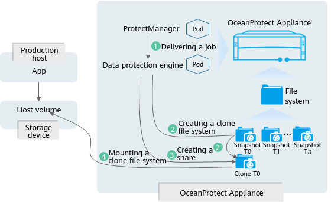

The product supports live mount, in which a backup copy is mounted to the host that uses data so that users can immediately access the backup copy data.
Application Scenarios
- Development and test data verification
Quickly access file system data through backup copies, run test scripts, and verify applications in the environment.
- Minute-level data restoration
If the production volume is abnormal, you can mount the backup copy to the production host to reduce the service interruption time.
Live Mount Service Process
Figure 1 shows the live mount service process. The following part assumes that the client is deployed on the product.
Figure 1 Live mount service process
- A live mount job is automatically scheduled or manually triggered on the product WebUI, and then sent to the data protection engine.
- The data protection engine creates a clone file system based on the restoration target copy.
- The client creates a share for the production host and grants access control permissions so that the clone file system can be mounted.
- Users manually mount the clone file system to the production host OS and access files in real time using the NFS or CIFS protocol.